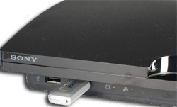

NAND & NOR WRITER v1.0 par la Team PS3Xploit
Utilisable uniquement sur une console en Firmware OFFICIEL!!!
NE PAS UTILISER SUR UNE CONSOLE EN CFW!
Console FAT compatible :
NOR : Hxx/Jxx/Kxx/Lxx/Mxx/Pxx/Qxx
NAND : Axx/Bxx/Cxx/Exx/Gxx
** BIEN VERIFIER QUE VOTRE CLE USB EST SUR LE PORT LE PLUS A DROITE DE VOTRE LECTEUR BLUE-RAY ET CONTIENT BIEN LE FICHIER "
flsh.hex
" **

Nand type NAND
Nand type NOR